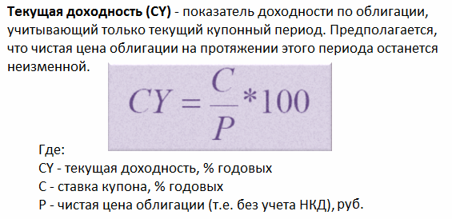
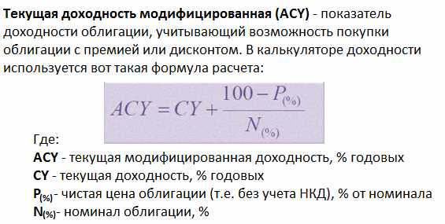
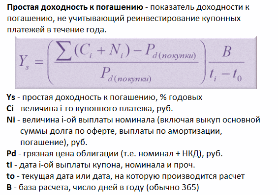
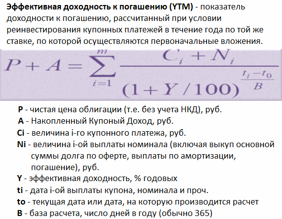

Доходность облигаций это параметр, который отражает прибыльность той или иной бумаги и обычно выражается в процентах годовых. Вообще доход по облигациям может быть двух типов:
В связи с этим существует множество формул, по которым рассчитывается доходность облигаций, и разные формулы по-разному учитывают типы доходов, перечисленные выше. Обычно в облигационном калькуляторе имеют место четыре основные доходности, которые мы подробно рассмотрим в этой статье и проясним, что означает каждая из них.
Все виды доходностей, которые мы будем рассматривать, рассчитываются автоматически и инвесторам предлагаются уже в виде готового результата (не важно где, либо в терминале Квик, либо в облигационном калькуляторе, либо где-то еще). Но я все равно приведу формулы расчета данных показателей для более глубокого понимания сути вопроса.

Учитывает только выплату текущего купона. Например, облигация с номиналом 1000р. торгуется по 90%. Купонная дох-сть составляет 12% или 120р. в год. Следовательно, текущая дох-сть будет равна 120р./900р. = 13,33%.
Экономический смысл данной доходности в том, чтобы показать инвестору сколько процентов он будет получать в виде купонных выплат в зависимости от вложенных средств. То есть, когда человека интересует именно денежный поток без учета выплаты номинала в дату погашения, тогда нужно смотреть на это значение.
В этой цифре не учитывается тот факт, что приобрели вы облигацию по 90%, а погашать будете по 100%. Допустим, рассмотренная выше облигация погашается через 5 лет. Разница 10% между покупкой 90% и погашением 100% безусловно увеличит вашу итоговую доходность, но это произойдет только к концу срока погашения, а каждый год вы будете получать именно вот эту текущую дох-сть, которая в нашем примере равна 13,33%.

В данной доходности учитывается и доход от разницы в цене и купоны. Данный тип не совсем корректен, т.к. полученное значение необходимо делить на количество лет, в течение которых мы владеем бумагой. Практического использования данная формула не имеет, однако во всех калькуляторах она есть, поэтому знать ее тоже нужно.

В данной формуле учитывается прибыль и от покупки ниже номинала и купонные платежи. Например, облигацию мы купили по 90%, купон 12%, текущая дох-сть 13,33%, срок до погашения 4 года, т.е. за 4 года мы получаем 10% в виде разницы (100%-90%). Разделив эти 10% на 4 года, получаем 2,5% годовых, которые прибавим к 13,33% и получим простую дох-сть к погашению 15,83%. Однако, чем длиннее срок до погашения, тем сильнее доход от разницы размывается в годовой доходности. Так, при сроке 10 лет простая дох-сть будет эквивалентна 14,33%.
Используя данный показатель, облигации уже можно сравнивать между собой. Если при инвестировании вы планируете держать облигации до конца срока их обращения, при этом намерены забирать купоны себе, т.е. не реинвестировать купонный доход в эти же бумаги, то смотреть нужно именно на простую доходность облигаций.
Если же вас интересует абсолютная доходность с учетом всей возможной прибыльности (т.е. купонные выплаты, разница в цене, а также прибыль от реинвестирования купонных платежей), тогда смотреть нужно на эффективную доходность облигаций.

Данный тип доходности является самым полным, именно это значение применяется биржей и транслируется в программе Квик в столбце «Доходность облигаций». Еще раз… данный тип доходности помимо купонных платежей и разницы в цене учитывает реинвестиции купонного дохода в те же самые облигации.
Как показывает практика, 95% инвесторов реинвестируют купоны, поэтому данную дох-сть приняли в качестве основного ориентира прибыльности облигаций. Помимо этого на базе указанного значения строится кривая доходности по облигациям.
Таким образом, мы рассмотрели типы доходностей облигационного рынка. Самой главной является эффективная доходность облигаций, она отражается в программе QUIK и именно ее использует биржа для расчета. На базе данного значения облигации можно сравнить друг с другом, и это даст ясную картину того, какая бумага более привлекательна для инвестиций с точки зрения возможной прибыльности.